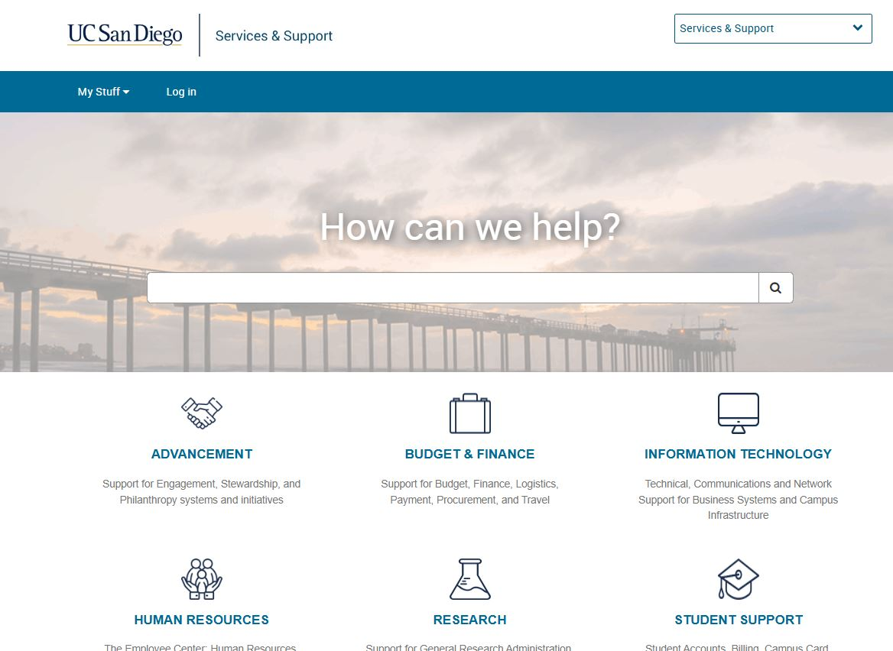

UCSD ITS Department
At UCSD's ITS Department, I develop and optimize workflows, forms, and records in ServiceNow using JavaScript to enhance accessibility for over 600,000 users. I conduct comprehensive QA testing to ensure the reliability and maintenance of campus-wide ticketing systems. Additionally, I publish detailed documentation in Confluence, providing clear guidelines and procedures to support department operations.